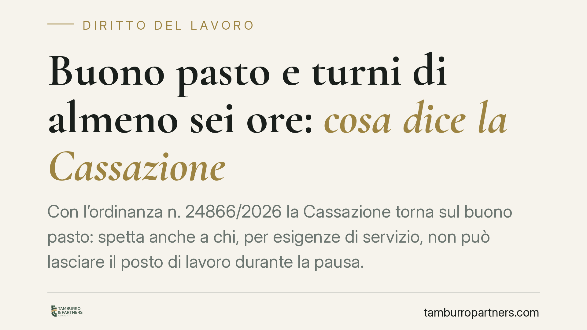

Buono pasto e turni di almeno sei ore: cosa dice la Cassazione
Con l'ordinanza n. 24866/2026 la Cassazione torna sul buono pasto: spetta anche a chi, per esigenze di servizio, non può lasciare il posto di lavoro durante la pausa. La Corte ne ribadisce la natura assistenziale, non retributiva. Una distinzione tecnica con ricadute concrete su TFR, tredicesima e contributi, soprattutto per i turnisti della sanità.

Il caso
La vicenda nasce dal ricorso di una lavoratrice turnista del comparto sanitario contro la propria azienda. Il punto controverso: spetta il buono pasto a chi, pur avendo diritto a una pausa, resta operativamente legato al posto di lavoro e non può consumare il pasto fuori sede?
La Corte di Cassazione, Sezione Lavoro, con ordinanza n. 24866/2026, ha risposto in senso favorevole al lavoratore. Il presupposto del buono pasto è lo svolgimento di un turno di una certa durata, non la possibilità materiale di uscire a mangiare né le modalità concrete della pausa.
*Nota di trasparenza: gli estremi dell'ordinanza sono riportati secondo la fonte indicata; consigliamo la verifica del testo integrale una volta disponibile il deposito ufficiale.*
Inquadramento normativo
Il buono pasto trova fondamento, per il pubblico impiego, nell'art. 6 del D.L. 333/1992 (conv. L. 359/1992) e, oggi, nell'Allegato II.17 del D.lgs. 36/2023 in materia di contratti pubblici per il profilo del servizio sostitutivo di mensa. La disciplina di dettaglio resta affidata alla contrattazione collettiva, che individua condizioni e soglie di spettanza.
Un chiarimento necessario riguarda la soglia delle "sei ore". L'art. 8 del D.lgs. 66/2003 prevede il diritto a una pausa quando l'orario giornaliero è *superiore a sei ore*. Si tratta però di una disposizione sulla pausa di lavoro, non sul buono pasto. Il presupposto delle sei ore consecutive valorizzato per il buono deriva dalla prassi e dalla contrattazione collettiva, oltre che dagli orientamenti giurisprudenziali, e non è automaticamente sovrapponibile alla soglia dell'art. 8. Le due discipline possono coincidere nei fatti, ma restano logicamente distinte.
Natura assistenziale, non retributiva
Il cuore della pronuncia è la qualificazione del buono pasto come prestazione di natura assistenziale, volta a conciliare l'attività lavorativa con l'esigenza di ristoro. Non è, invece, una voce retributiva.
La differenza non è nominalistica. Se il buono fosse retribuzione, entrerebbe nella base di calcolo di TFR, tredicesima e contributi previdenziali. La sua natura assistenziale, al contrario, lo tiene fuori da questi istituti. Questo spiega anche perché il buono goda di un trattamento fiscale agevolato: l'art. 51, comma 2, lett. c) del TUIR esclude dalla formazione del reddito di lavoro dipendente le somministrazioni di vitto e i buoni pasto entro i limiti giornalieri previsti dalla norma (da verificare negli importi aggiornati, differenziati tra buono cartaceo ed elettronico).
Implicazioni pratiche
Per il lavoratore turnista, la pronuncia conferma che la spettanza del buono va ancorata a un dato oggettivo — la durata del turno — e non alla circostanza, spesso penalizzante, di non poter uscire. È un principio rilevante in tutti i settori con presidio continuativo: sanità, sicurezza, servizi essenziali.
Per il datore di lavoro, significa verificare che i criteri di erogazione applicati non introducano requisiti ulteriori rispetto a quelli previsti dalla contrattazione collettiva. Subordinare il buono alla possibilità di consumare il pasto fuori sede è un criterio che, alla luce di questo orientamento, rischia di non reggere.
Resta centrale il raccordo con il CCNL applicabile: la Cassazione detta un principio, ma le condizioni concrete di spettanza restano fissate dalla contrattazione. Nessun automatismo.
Prescrizione del credito
Chi ritenga di aver maturato buoni pasto non corrisposti deve considerare i termini di prescrizione. Trattandosi di crediti che maturano con cadenza periodica, è tendenzialmente applicabile la prescrizione quinquennale ex art. 2948 c.c.; in presenza di diverse qualificazioni del credito non è esclusa la prescrizione ordinaria decennale. La valutazione va fatta caso per caso, anche in relazione alla natura del rapporto e al momento di decorrenza del termine.
Cosa fare in concreto
- Verifica la durata effettiva dei turni: ricostruisci quali giornate superano la soglia rilevante per il buono secondo il tuo CCNL.
- Leggi il contratto collettivo applicabile: individua le condizioni di spettanza e gli eventuali requisiti aggiuntivi previsti.
- Raccogli la documentazione: cartellini, turni, buste paga e comunicazioni aziendali sull'erogazione o il diniego dei buoni.
- Controlla i termini di prescrizione: individua da quando decorrono i cinque anni e valuta un atto interruttivo se necessario.
- Fai valutare la posizione a un professionista prima di agire, per verificare la fondatezza e la quantificazione della pretesa.
Disclaimer
Contributo informativo a cura di Tamburro & Partners - Avv. Giuseppe Tamburro. Non costituisce parere legale.
Ogni storia di lavoro ha i suoi tempi.
Se gestisci HR e vuoi un confronto su contenzioso, ispezioni o licenziamenti, scrivi allo studio. Ti rispondiamo entro un giorno lavorativo.